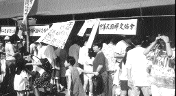
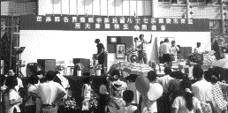

| L'amour en action |
(soins vitaux) |
Le 10 octobre de cette année, l'association Lifeline de Miaoli a financé une vente de charité. C'est la date de la Journée Nationale de la République de Chine, pour collecter des fonds pour construire de nouveaux établissements. Toutes les personnes officielles du gouvernement du comté de Miaoli et beaucoup d'organismes de charité étaient invités à célébrer ensemble ce moment. Les initiés ont aussi participé à cet événement. Ce jour-là, ils ont tenu un stand de plats végétariens, attirant beaucoup de personnes qui ont voulu goûter à tous ces nouveaux plats, aux amuse-gueules et aux boissons. De nombreux livrets-échantillons et de magazines de Maître ont été distribués. A la fin de la journée, les initiés ont contribué à l'action de Lifeline par un spectacle de soutien montrant ainsi l'amour de Maître en action.
|  | Entrer en contact avec le public par l’intermédiaire de la délicieuse cuisine végétarienne. |
|  | Les pratiquants de Miaoli, de Formose, participent à une vente de charité organisée par l'Association Lifeline de Miaoli |